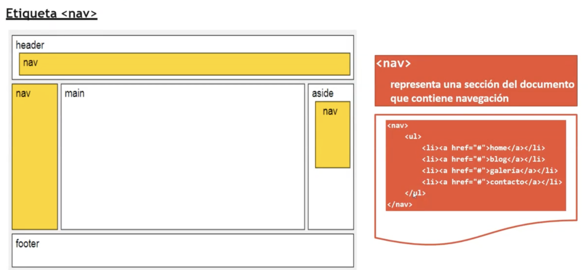

El div es una caja, gracias a el podemos crear cajas rectangulares e identificar de manera exclusiva un apartado del documento
Esto se hace a través de de un código de identificación, el atributo id="comentarios" y se referencia en css como #comentarios{}
a parte también tenemos class="" que se asocia a varios elementos, que recopila todas las caracteristicas que quieras como por ejemplo asociar p em y img con los mismos colores, letra, background etc. class="comentarios" y se referencia en css con .laClaseQueSea{}
así podemos estructurar una página como ejemplo: header div id="header" article div id="article" nav div id="nav" footer div id="footer"
span
trabajan como contenedor en lineadiv
trabaja en bloque y se pueden meter dentro de él los spandiv
maquetación web para crear la estructura, crear contenido flotante, se ajusta muy bvien al css float
contenedor de más contenedores, para guardar más información en esas cajas.
en html5 ya están las porpias como header nav article section aside footer ya no hace falta tanto div

article sirve para meter artículos
section sirve para secciones
nav para navegadores los tipicos de los 3 puntitos
aside sirve para meter videos fotos para elementos secundarios como banners o publicidad
header que es la cabecera
footer que es el pie
main es una etiqueta de bloque
Mejora la legibilidad, es reutilizable, incluye etiquetas de video y audio de manera más efciciente, incluye la etiqueta canvas que permite hacer dibujos sobre la página web, elimina etiquetas obsoletas.
etiqueta nav
Representa una sección del documento que contiene navegación

seccion agrupa la parte principal del documento como si fueran noticias
LISTAS
En html5 hay 3 tipos de listas:- Listas ordenadas (ol)
Orderer list - Listas desordenadas (ul)
y son listas que no van numeradas
unorderer list - Listas de definición (dl)
definition list
- ol lista ordenada
- ul Lista desordenadas
- dl lista de definición
Por lo que se pueden combinar listas ordenadas con desordenadas y con lo que sea
LISTAS ORDENADAS
La estructura es:- La LISTA ESTÁ FORMADA por la apertura y cierre ol
- Internamente dispondra de li en la que se puede listar el contenido
pondremos los elementos que queremos que se muestren - La etiquete li irá siempre tanto en listas ordenadas con desordenadas
Para vsc se puede poner así ol>li*4 y te sale todo ordenadito
- Windows 11
- Ubuntu
- Kali Linux
- MacOs Yosemite
- Java
- Php
- Python
Listas de definición
- Tienen la etiqueta dl: delimita la lista completa
- dt: description Term delimitar el término
- dd: definition description delimitar las definiciones
ejemplo de lista de definición
- dl
- dd crea la caja que contiene los items de la lista
- dt
- Es el item que contiene un término a definir
- dd
- Es el item que contiene una definición
Listas anidadas
Se pueden anidar los tipos de listas convinando listas ordenadascon desordenadas:
Suelen emplearse listas anidadas hasta un tercer nivel
- CSGS ASIR
- Fundamentos de Hardware / Sistemas Informáticos
- Cambios de base: binario, octal, hexadecimal
- Sistmeas Microinformáticos
- Virtualización, y RAID
- Lenguaje de marcas
- Html
- Css
- Javascript
- Fundamentos de Hardware / Sistemas Informáticos